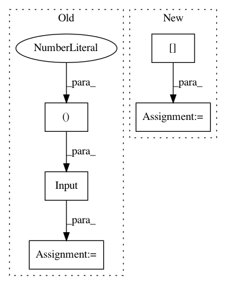

a2f7797175eaf8cc1528bcf315e823d6fd4d8a18,networks.py,,discriminator,#Any#,38
Before Change
n_joints = param["n_joints"]
x_src = Input(shape=(IMG_HEIGHT,IMG_WIDTH,3))
x_tgt = Input(shape=(IMG_HEIGHT,IMG_WIDTH,3))
x_pose = Input(shape=(IMG_HEIGHT, IMG_WIDTH, 2*n_joints))
x = concatenate([x_src,x_tgt,x_pose])
x = myConv(x,128,strides=2) /ኜx64x128
After Change
IMG_HEIGHT = param["IMG_HEIGHT"]
IMG_WIDTH = param["IMG_WIDTH"]
n_joints = param["n_joints"]
pose_dn = param["posemap_downsample"]
x_src = Input(shape=(IMG_HEIGHT,IMG_WIDTH,3))
//x_tgt = Input(shape=(IMG_HEIGHT,IMG_WIDTH,3))
x_pose = Input(shape=(IMG_HEIGHT/pose_dn, IMG_WIDTH/pose_dn, n_joints))
In pattern: SUPERPATTERN
Frequency: 3
Non-data size: 5
Instances
Project Name: balakg/posewarp-cvpr2018
Commit Name: a2f7797175eaf8cc1528bcf315e823d6fd4d8a18
Time: 2017-05-16
Author: balakg@thousandeyes.csail.mit.edu
File Name: networks.py
Class Name:
Method Name: discriminator
Project Name: stellargraph/stellargraph
Commit Name: 59266e34e076ed25852bccf5ce13025b5408406f
Time: 2019-05-28
Author: andrew.docherty@data61.csiro.au
File Name: stellargraph/layer/gcn.py
Class Name: GCN
Method Name: node_model
Project Name: shenweichen/DeepCTR
Commit Name: 7ab8bc6a70982aa79c36c20678c98becb7f291b1
Time: 2020-09-11
Author: wcshen1994@163.com
File Name: deepctr/models/dien.py
Class Name:
Method Name: DIEN